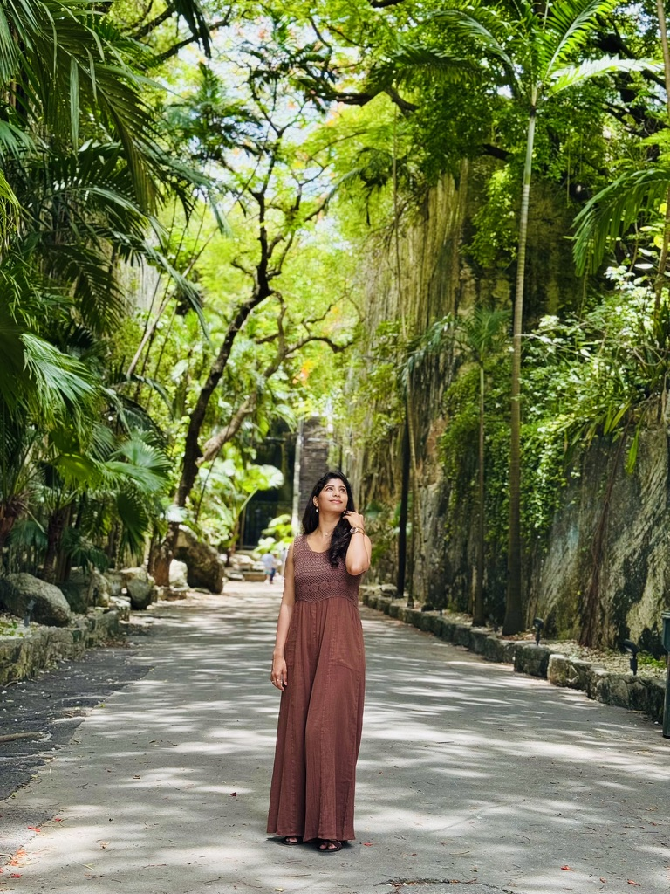
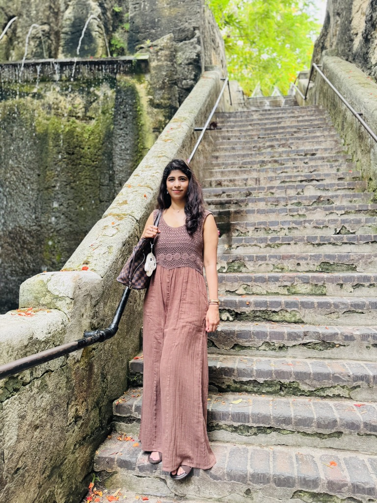
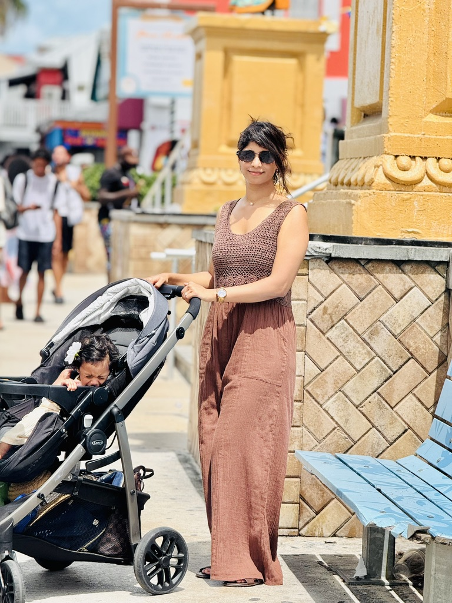
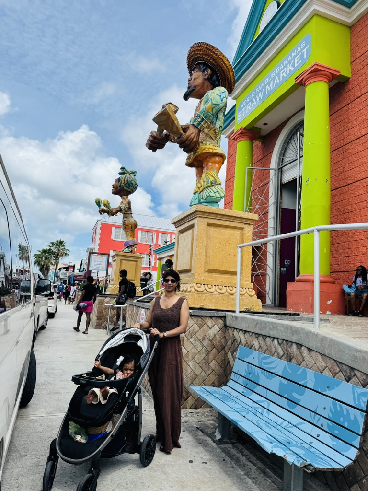
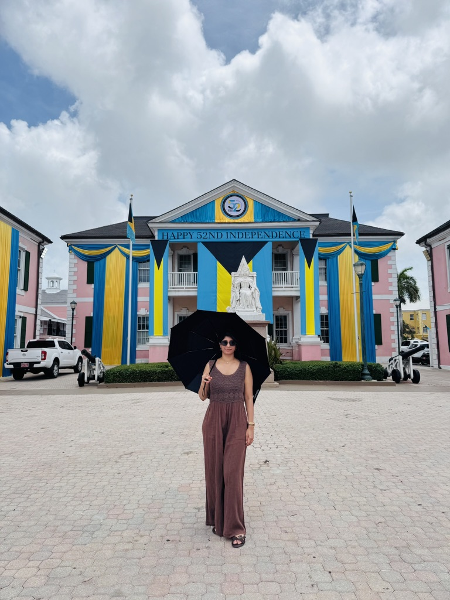
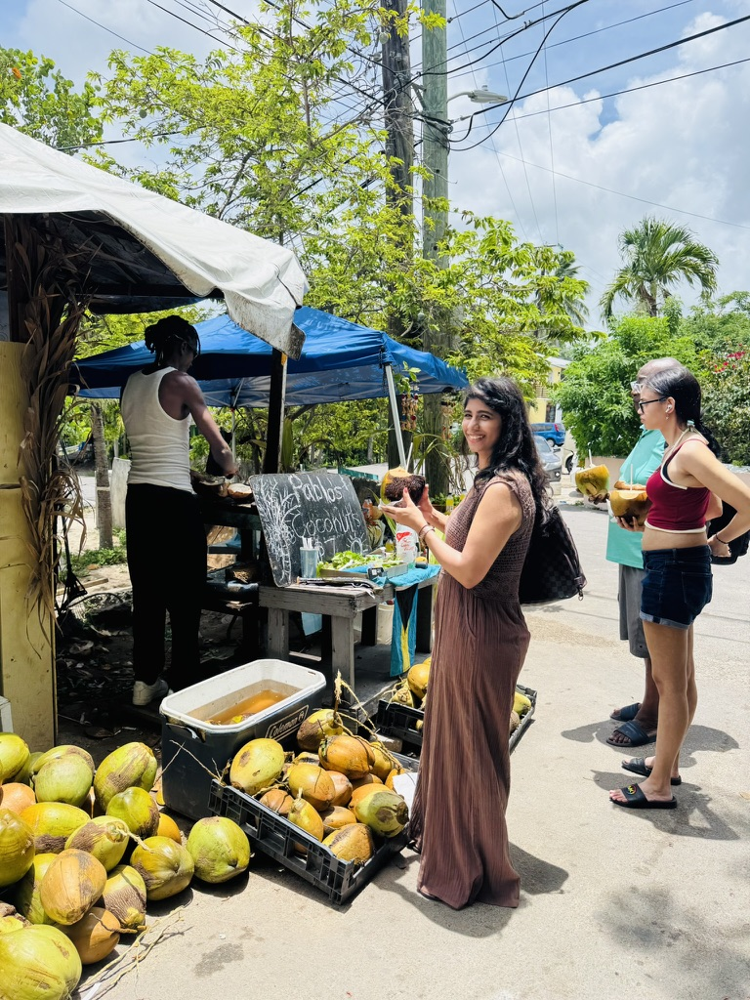
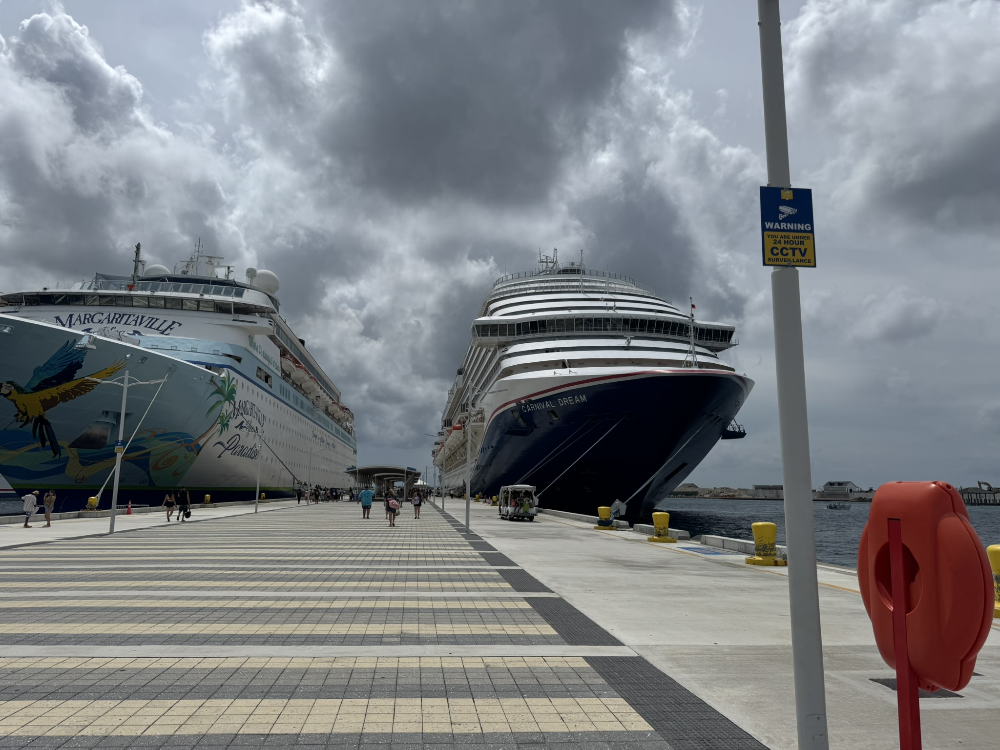

NASSAULimestone stairs, straw hats, and a harbor that eats cruise ships.
Queen’s Staircase carved out of solid rock, coconut water with a straw still in the husk, and Bay Street when the ships unload. Three or four days if you want more than the port photo.
3–4Days
5Pins on the map
∞Conch versions
The ships leave. The island doesn’t.
Nassau captured me between the staircase and the market — limestone steps wet with humidity, straw hats under a tin roof, parliament pink against a blue that does not negotiate. Downtown is walkable. Cable Beach is the leave. Conch is the meal plan.
Where I actually walked.
Every tagged stop is on the map. All pins shows them together — tap a name to zoom in. Each popup opens the same place in Google Maps.
The useful layer — forts before noon, Fish Fry for conch, Junkanoo dates, and how to leave the cruise pier without buying every souvenir twice.
🪜 Queen’s Staircase
Sixty-six limestone steps carved out of solid rock in the 1790s. Tropical overhang, humidity on the stone, an easy walk from downtown. Go early before the ship groups fill the stairs.
👒 Straw Market
Hats, bags, bargaining under a roof that smells like raffia. Not a museum. A market that still works if you know what you want and smile through the pitch.
🏛️ Parliament Square
Pink colonial blocks, a statue, the postcard of Bahamian government. Short stop. Pair it with Bay Street and keep walking.
🏰 Fort Charlotte
Eighteenth-century walls with a harbor view. Pirate lore, cannons, cooler air in the morning. Worth the climb before the heat decides for you.
🏖️ Cable Beach
Soft sand, clear water, the beach Nassau puts on the brochure. Swim, sit, eat nearby. A taxi from downtown, not a stroll.
🛍️ Bay Street
Duty-free, crafts, the main drag when the ships are in. Culture and souvenirs in the same block. Sample Bahamian food here, then escape to Fish Fry if you want the real plate.
🐬 Dolphin Cay
At Atlantis. Interactive, popular, sells out. Book ahead if this is the reason you came. I put it on the unfinished list — verify times and packages on the official site.
Resort day pass or overnight if the water park is the plan. Separate budget from downtown Nassau. Book rooms early for holidays.
Day pass / stay
🎉 Junkanoo nights
Dec 26 and Jan 1 — costume parade, drums, the island’s loudest calendar dates. Hotels fill months ahead. Plan or miss it.
Book months ahead
🤍 No reservation
Queen’s Staircase, Straw Market, Parliament Square, Bay Street wander, most of Fort Charlotte’s exterior energy. Show up early. The staircase at opening is a different island.
Walk up
🥗 Conch salad
Fresh conch cut in front of you — onions, peppers, lime. Spicy, cold, the Bahamian bite. Potter’s Cay and Arawak Cay Fish Fry earn the line.
$8–12
🍤 Conch fritters
Fried dough with conch inside, spicy mayo on the side. Every restaurant has a version. The correct hour is anytime you are hungry between beaches.
$10–15
🐟 Cracked conch
Breaded, fried, like seafood schnitzel. Pair with peas & rice. Fish Fry does it right when the oil is fresh.
$15–20
🍚 Peas & rice
Pigeon peas, rice, tomato paste, spices. The side that shows up with everything. Comfort that does not need a reservation.
$5–8
🦞 Rock lobster
Bahamian crawfish — all tail, no claws. Grilled or in pasta. Season roughly Aug–March. Pricey. Worth it when it is fresh.
$30–50
🍹 Bahama Mama
Rum and fruit juice that tastes like the brochure. Sky Juice if you want gin, coconut water, condensed milk. Sweet, strong, beach-hour correct.
$10–15
🥥 Coconut water
From a vendor with a machete. Straw in the husk. Not a café. The field-note drink that costs almost nothing and tastes like the island.
A few dollars
📅 When to book
Dec–Apr peak needs a head start. Junkanoo (Dec 26 / Jan 1) needs months. Hurricane season is cheaper and a weather gamble — travel insurance is not optional then.
📍 Where
Downtown / harbor — stairs, market, walkable history. Cable Beach — sand first, taxis into town. Paradise Island / Atlantis — resort bubble, different budget.
💵 Spend less
You do not need the cruise-port hotel rate to eat Fish Fry. Stay off the pier strip, walk downtown, taxi to Cable Beach for the swim day.
☀️ December–April
21–27°C, least rain, best beach window. Peak prices and cruise crowds. Christmas–New Year is the busiest and priciest. Junkanoo at year’s turn.
🌺 April–May
23–29°C, still excellent water, fewer crowds after Easter. Prices ease. Bahamas Carnival energy in May. A strong shoulder.
🌧️ June–November
Hurricane season. Hot, humid, possible storms — Aug–Oct is peak risk. Lowest rates (often 40–60% off). Monitor forecasts. Lobster season overlaps Aug–Mar.
🎉 Festival calendar
Junkanoo Dec 26 and Jan 1 — costume parade you plan around. Carnival in May. Regattas year-round. Book lodging early for the loud nights.
🚶 Walk downtown
Staircase, Straw Market, Parliament, Bay Street — one pair of shoes. Heat is the real distance. Water and shade between pins.
Free
🚕 Taxis
How you reach Cable Beach, the airport, and Paradise Island without a rental. Agree the rate or use a meter where it exists. Shared taxis are common.
By ride
🚌 Jitney buses
Local buses on fixed routes — cheap, slow, real. Useful if you are not racing a ship whistle. Ask the driver; routes are numbered, not tourist-coded.
A few dollars
🚢 Cruise port
Prince George Wharf dumps thousands onto Bay Street at once. Go early or late. The island is quieter when the ships are still at sea.
Timing
Select your citizenship
Often a visa — or entry with another valid visa. Indian citizens commonly need a Bahamas visa, or may be allowed to enter for short tourism with a valid US, UK, Canada, or multi-country European visa. A valid multi-country European visa may help Bahamian entry — verify with Immigration Bahamas before you book.
Where are you currently residing?
📅 Bahamas entry
BaselineIndian passport holders often need a Bahamas visa for tourism
Alternate pathSome travelers may enter with a valid US, UK, Canada, or multi-country European visa — confirm current Immigration Bahamas policy
DurationShort tourism stays are typical; exact length depends on admission
VerifyImmigration Bahamas / Bahamas embassy or consulate
📄 What to prepare
Valid Indian passport (min. 6 months validity is a common ask)
Return / onward ticket
Proof of accommodation
Sufficient funds for the stay
Visa application if required for your case
Any third-country visa you plan to use for entry (US/UK/Canada/European multi-country) — must be valid
📍 Where to check
OfficialImmigration Bahamas and Bahamian diplomatic missions
TimingConfirm rules weeks before travel — cruise and airline staff will follow the latest list
Biometrics / formsDepends on whether you apply for a Bahamas visa or enter under another visa category
💡 Pro tips
Do not assume visa-free — print or screenshot the official guidance you relied on
If using a US/UK/Canada/European multi-country visa, check it is multiple-entry and still valid for the whole trip
A valid multi-country European visa may help Bahamian entry — still confirm Immigration Bahamas lists your exact document
Airlines can deny boarding if documents look incomplete
Keep hotel and return-flight proof handy at immigration
This is general guidance only — not legal advice
Important: General guidance only. Always verify with Immigration Bahamas or a Bahamian embassy/consulate. Visa and visa-exemption rules can change without notice.
📅 Typical H1B / US-visa path
Common outcomeIndian citizens with a valid US visa (including H1B) can often visit the Bahamas visa-free for short tourism
Still verifyPolicy is set by Immigration Bahamas — confirm before you fly
US statusYour H1B/H4/OPT must allow re-entry to the USA after the trip
Recent pay stubs or employment letter (useful if asked)
🇺🇸 Re-entry to the USA
StampH1B/H4/OPT stamp must be valid to fly back into the USA
I-94Confirm it remains valid for your status after the side trip
TimingDo not stack this trip onto an expired stamp window
💡 Tips
Screenshot current Immigration Bahamas guidance for Indian nationals / US visa holders
Weekend Nassau trips from the US East Coast are common — documents still matter
Cruise vs fly-in can have different document checks at embarkation
Keep US address and employment proof available
Important: Typically visa-free short tourism is possible with a valid US visa, but verify with Immigration Bahamas. Protect your US re-entry status before you leave.
Visa-free for tourism. US citizens can usually visit the Bahamas without a visa for short tourist stays.
✈️ Visa-free entry
PurposeTourism and short visits
PassportValid US passport required
ProofReturn ticket and accommodation may be requested
LengthShort stays; confirm current limits officially
🛂 At the border
Valid US passport
Return / onward ticket
Hotel or cruise itinerary
Enough funds for the stay
💡 Travel tips
Even visa-free travelers get questioned on purpose and length
Keep passport pages clean for stamps
Cruise embarkation still checks documents
Verify Immigration Bahamas if your trip is longer than a standard short stay
Note: Visa-free is still subject to admission. Check Immigration Bahamas for the latest US-citizen guidance before you travel.
What stayed on the roll.
Five frames from Nassau — stairs, straw, parliament pink, coconut water, and the cruise pier.


01 / 03
01 / 05
Stairs cut from the rock
Queen’s Staircase does not negotiate with humidity. Solid limestone, greenery overhead, sixty-six steps that still feel like labor. I went early. The stone was cooler than the street.


01 / 02
02 / 05
Hats under a tin roof
The Straw Market is bargaining with a smile and knowing when to walk. Raffia, color, a pitch on every aisle. I bought less than they hoped. I still left with the smell of the place.

01 / 01
03 / 05
Parliament pink
Colonial blocks the color of a postcard. Short stop, clean light, Bay Street noise one block over. The square is small. The color is the memory.

01 / 01
04 / 05
Coconut, open
A machete, a husk, a straw. Fresh coconut water is not a café order here — it is a sidewalk transaction. Cold enough. Cheap enough. The correct pause between stairs and ships.

01 / 01
05 / 05
When the ships are in
Nassau Cruise Port is the island’s volume knob. Hulls, gangways, a sudden crowd on Bay Street. I photographed the pier and then walked inland until the noise thinned.
Still on the list.
Three or four days is a first draft. These are the rooms I didn’t finish — or barely started.
🐬 Dolphin Cay
Atlantis, advance booking, a morning I spent on stairs and conch instead. If you go for the swim, reserve it — walk-up is a rumor.